安装VM-ware虚拟机
安装centos系统
安装windows-7系统
安装VM-ware虚拟机
VM-ware官网
VM-ware下载
往下翻找到Workstation 16 Pro For Windows
点击DOWNLOAD NOW
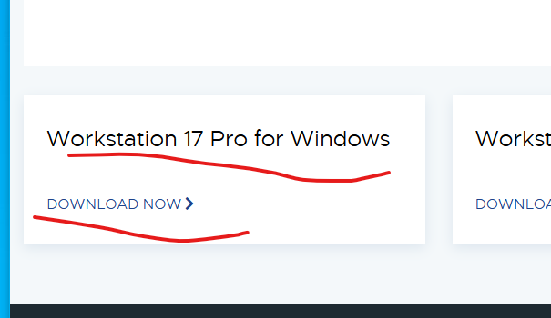
下载后点击安装
安装软件都会吧,无脑下一步就行
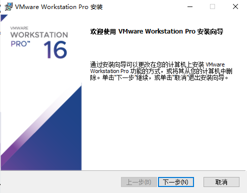
许可证-在linux教程上第一节有
此外还需要centos和Windows7系统镜像文件
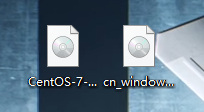
推荐一个网站(msdn)
安装centos系统
打开VM-ware点击创建新的虚拟机
选择典型
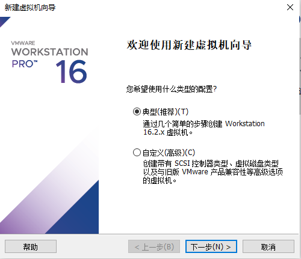
选择安装程序光盘映像文件-选择centos镜像文件-点击下一步
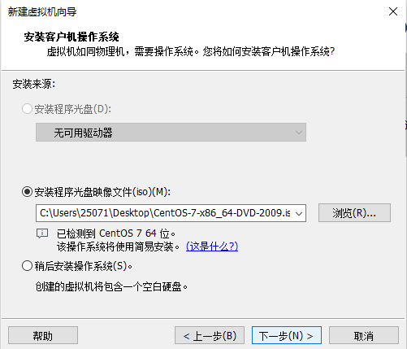
随便起个名字,设个密码-点击下一步
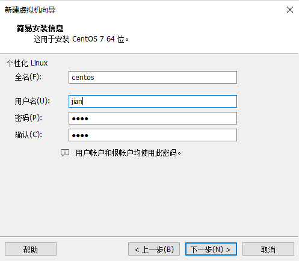
给虚拟机起个名字,选择一个安装位置-点击下一步
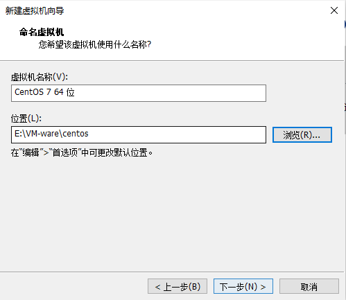
设置存储-点击下一步
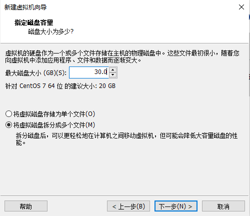
更具自己需求设置硬件信息-点击完成
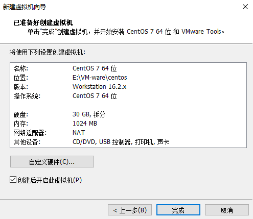
点击开启此虚拟机
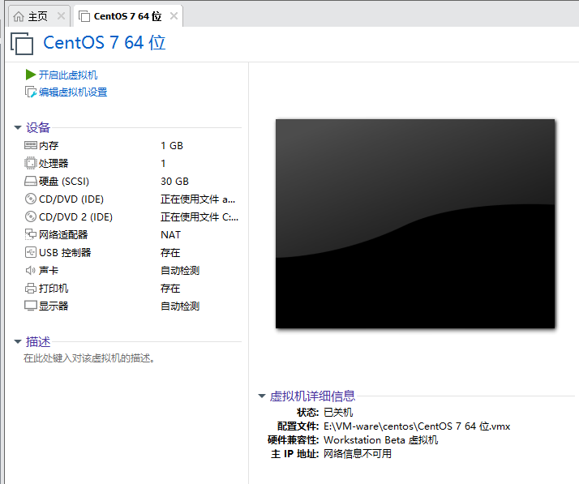
等她加载完
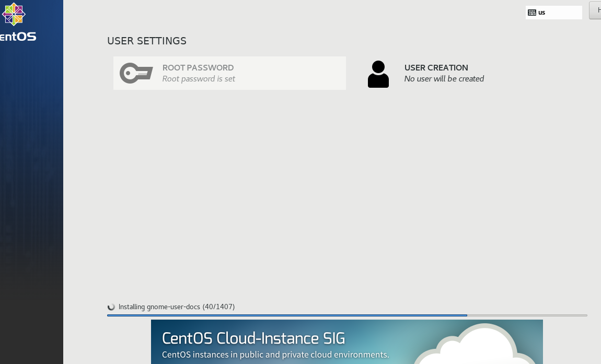
熄屏界面长这样
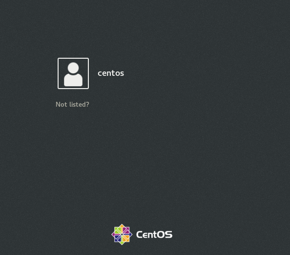
登录进去是这样
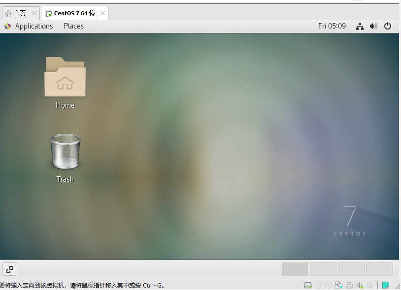
安装Windows7系统
点击文件-新建虚拟机
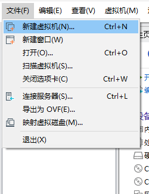
选择典型
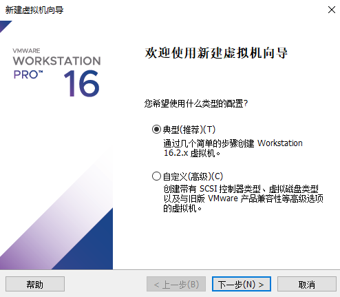
参考centos安装
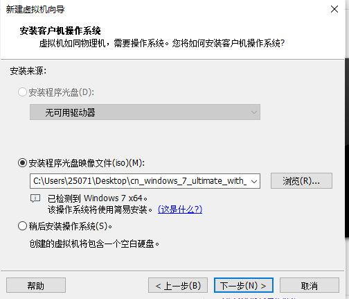
随便填一下
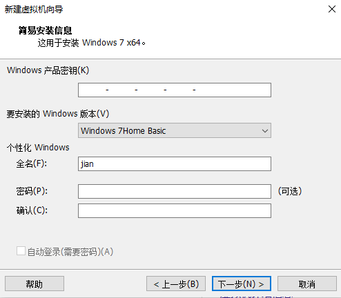
选一下安装位置
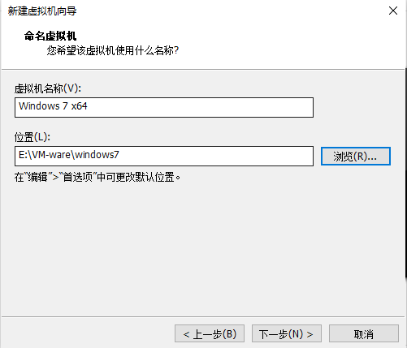
设置以下存储大小
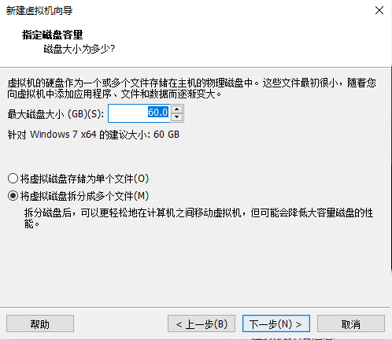
设置硬件分配-点击完成
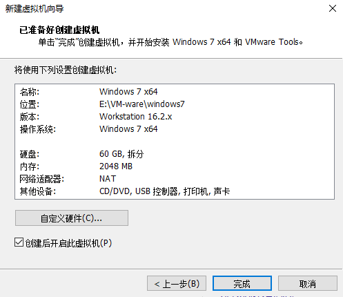
安装
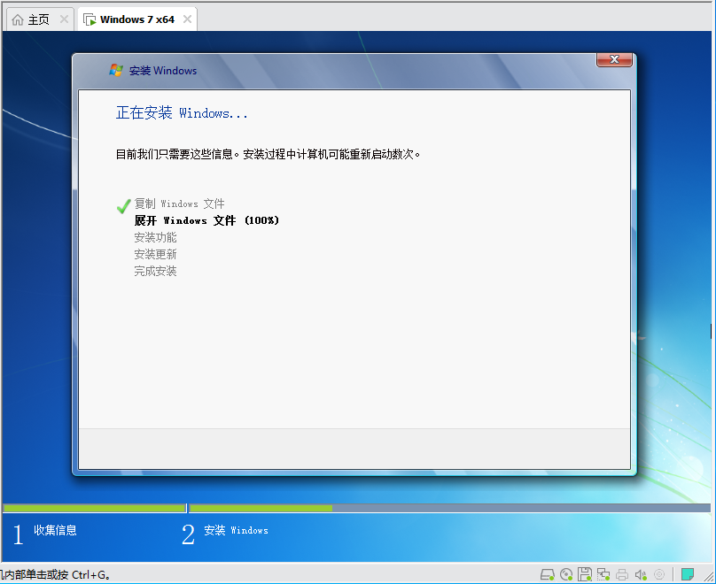
就酱了
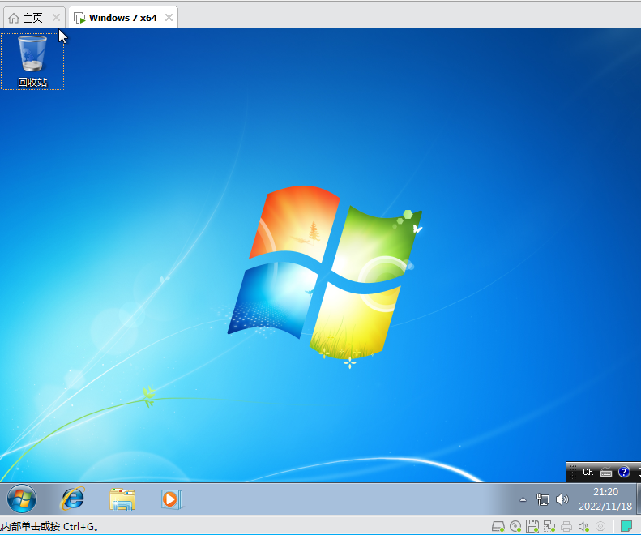